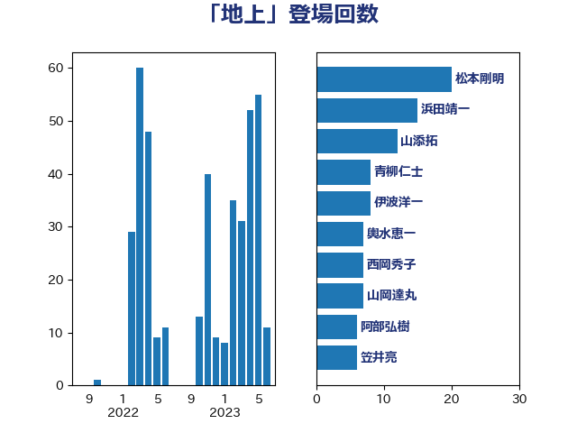

単語「地上」

| 松本剛明 | 自由民主党 | 20 回 |
| 浜田靖一 | 自由民主党 | 15 回 |
| 山添拓 | 日本共産党 | 12 回 |
| 青柳仁士 | 日本維新の会 | 8 回 |
| 伊波洋一 | 無所属 | 8 回 |
| 輿水恵一 | 公明党 | 7 回 |
| 西岡秀子 | 国民民主党 | 7 回 |
| 山岡達丸 | 立憲民主党 | 7 回 |
| 阿部弘樹 | 日本維新の会 | 6 回 |
| 笠井亮 | 日本共産党 | 6 回 |
| 田村智子 | 日本共産党 | 6 回 |
| 道下大樹 | 立憲民主党 | 4 回 |
| 穀田恵二 | 日本共産党 | 4 回 |
| 後藤祐一 | 立憲民主党 | 4 回 |
| 伊藤岳 | 日本共産党 | 4 回 |
| 井上哲士 | 日本共産党 | 4 回 |
| おおつき紅葉 | 立憲民主党 | 4 回 |
| 青山繁晴 | 自由民主党 | 3 回 |
| 金子恭之 | 自由民主党 | 3 回 |
| 赤嶺政賢 | 日本共産党 | 3 回 |
| 西村康稔 | 自由民主党 | 3 回 |
| 萩生田光一 | 自由民主党 | 3 回 |
| 若松謙維 | 公明党 | 3 回 |
| 渡辺猛之 | 自由民主党 | 3 回 |
| 浜田聡 | NHK党 | 3 回 |
| 櫛渕万里 | れいわ新選組 | 3 回 |
| 林芳正 | 自由民主党 | 3 回 |
| 新垣邦男 | 立憲民主党 | 3 回 |
| 斉藤鉄夫 | 公明党 | 3 回 |
| 岸田文雄 | 自由民主党 | 3 回 |
| 岡田克也 | 立憲民主党 | 3 回 |
| 山岸一生 | 立憲民主党 | 3 回 |
| 小西洋之 | 立憲民主党 | 3 回 |
| 小沢雅仁 | 立憲民主党 | 3 回 |
| 前原誠司 | 国民民主党 | 3 回 |
| 高橋千鶴子 | 日本共産党 | 2 回 |
| 須藤元気 | 無所属 | 2 回 |
| 篠原豪 | 立憲民主党 | 2 回 |
| 田嶋要 | 立憲民主党 | 2 回 |
| 柘植芳文 | 自由民主党 | 2 回 |
| 末次精一 | 立憲民主党 | 2 回 |
| 末松義規 | 立憲民主党 | 2 回 |
| 日下正喜 | 公明党 | 2 回 |
| 山本博司 | 公明党 | 2 回 |
| 山本剛正 | 日本維新の会 | 2 回 |
| 國場幸之助 | 自由民主党 | 2 回 |
| 和田有一朗 | 日本維新の会 | 2 回 |
| 吉田宣弘 | 公明党 | 2 回 |
| 古賀之士 | 立憲民主党 | 2 回 |
| 住吉寛紀 | 日本維新の会 | 2 回 |
| 仁比聡平 | 日本共産党 | 2 回 |
| 三浦靖 | 自由民主党 | 2 回 |
| 鬼木誠 | 立憲民主党 | 1 回 |
| 高橋光男 | 公明党 | 1 回 |
| 音喜多駿 | 日本維新の会 | 1 回 |
| 長島昭久 | 自由民主党 | 1 回 |
| 西村明宏 | 自由民主党 | 1 回 |
| 芳賀道也 | 国民民主党 | 1 回 |
| 羽田次郎 | 立憲民主党 | 1 回 |
| 石橋通宏 | 立憲民主党 | 1 回 |
| 石川大我 | 立憲民主党 | 1 回 |
| 玉木雄一郎 | 国民民主党 | 1 回 |
| 片山さつき | 自由民主党 | 1 回 |
| 熊谷裕人 | 立憲民主党 | 1 回 |
| 渡辺周 | 立憲民主党 | 1 回 |
| 渡辺創 | 立憲民主党 | 1 回 |
| 清水貴之 | 日本維新の会 | 1 回 |
| 浮島智子 | 公明党 | 1 回 |
| 浅田均 | 日本維新の会 | 1 回 |
| 浅川義治 | 日本維新の会 | 1 回 |
| 津島淳 | 自由民主党 | 1 回 |
| 泉健太 | 立憲民主党 | 1 回 |
| 河野義博 | 公明党 | 1 回 |
| 河西宏一 | 公明党 | 1 回 |
| 榛葉賀津也 | 国民民主党 | 1 回 |
| 柴田巧 | 日本維新の会 | 1 回 |
| 松川るい | 自由民主党 | 1 回 |
| 松原仁 | 立憲民主党 | 1 回 |
| 東徹 | 日本維新の会 | 1 回 |
| 末松信介 | 自由民主党 | 1 回 |
| 志位和夫 | 日本共産党 | 1 回 |
| 平山佐知子 | 無所属 | 1 回 |
| 山崎誠 | 立憲民主党 | 1 回 |
| 小森卓郎 | 自由民主党 | 1 回 |
| 宮澤博行 | 自由民主党 | 1 回 |
| 宮本徹 | 日本共産党 | 1 回 |
| 安江伸夫 | 公明党 | 1 回 |
| 大島敦 | 立憲民主党 | 1 回 |
| 吉良よし子 | 日本共産党 | 1 回 |
| 加藤勝信 | 自由民主党 | 1 回 |
| 伊藤俊輔 | 立憲民主党 | 1 回 |
| 伊東信久 | 日本維新の会 | 1 回 |
| 井坂信彦 | 立憲民主党 | 1 回 |
| 串田誠一 | 日本維新の会 | 1 回 |
| 中川郁子 | 自由民主党 | 1 回 |
| 三浦信祐 | 公明党 | 1 回 |
| 三木圭恵 | 日本維新の会 | 1 回 |